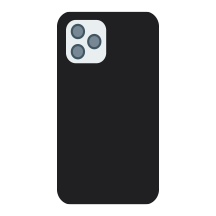

CTA APP HOME - Change
Cameras
Bridge
Digital SLR
Phone Cameras
Point-and-Shoot
Online Camera Company
Bridge Camera
Digital SLR
Bridge cameras contain manual control, long zoom ranges for the camera lens, and a viewfinder that does not have interchangeable lenses. The bridge camera is a combination of the point-and-shoot camera and the DSLR camera.
Bridge cameras contain manual control, long zoom ranges for the camera lens, and a viewfinder that does not have interchangeable lenses. The bridge camera is a combination of the point-and-shoot camera and the DSLR camera.
Phone Cameras
Point-and-Shoot

Many digital touch phones contain high-quality lenses, such as the 24 mm as the main camera lens, alongside 28 mm and 25 mm lenses for multi-purpose photoshoots. The main lens is used for taking images of nearby subjects while the secondary lens detects movement and objects from a far distance.
The point-and-shoot camera, also known as the compact camera, is primarily used for simple photos with simple subjects in both digital and film cameras.